Next: Electrical Circuits Up: Applications Previous: Applications Contents Index
Graph theory is a fairly new area of mathematics which is used to create models in economics, social sciences, traffic analysis, medicine, electrical engineering and many other fields. It has become a truly vast subject. We will try to give some flavor of it and show how the ideas of linear algebra are tightly connected.
A directed graph is a collection of
Any graph can be represented by a square matrix
 such that 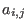
is
the number of edges joining vertex
such that 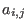
is
the number of edges joining vertex  to vertex
to vertex  . The matrix
representation for the directed graph illustrated in Figure 4.1 is given below.
. The matrix
representation for the directed graph illustrated in Figure 4.1 is given below.

Notice that the row number gives us the number of the vertex we come from and the column
number corresponds to the vertex we travel to. This means that  means there is
an edge connecting vertex 1 with vertex 5. Since we cannot go directly to vertex 3 from vertex 5, we
have
means there is
an edge connecting vertex 1 with vertex 5. Since we cannot go directly to vertex 3 from vertex 5, we
have  .
.
A matrix representation of a directed graph  that has the conditions that 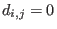
or
that has the conditions that 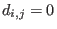
or  and that
and that
 is called a incidence matrix. This means that there is at most
one edge from any vertex to any other. Also, no edge exists which connects a vertex to itself.
is called a incidence matrix. This means that there is at most
one edge from any vertex to any other. Also, no edge exists which connects a vertex to itself.
Incidence matrices can be used by sociologists and anthropologists to represent and study group interactions. These type of matrices can also be used to analyze transportation problems in exactly the same way. We will first look at a simple transportation system.
In the sketch of the routes of our Example Airlines (Figure 4.2), we used a line with two arrowheads to represent when vertices are connected by edges in both directions. The cities could be given the following numbers for rows and columns:
| Vancouver | 1 |
| Edmonton | 2 |
| Calgary | 3 |
| Winnipeg | 4 |
| Toronto | 5 |
We can easily determine that it is impossible to make a direct flight from Vancouver to Winnipeg
using Example Airlines. Intermediate stops are necessary. Suppose we wanted to know in how many
ways we can travel from one city to another with a given number of stops. There are, for example,
two routes a traveler can take from Vancouver to Winnipeg with two stopovers. A route from
one vertex to another is called a chain or path. A path
which is made up of exactly two edges is called a 2-chain. An example would be a flight
to Toronto from Calgary via Winnipeg. It should be very, very obvious what a 3-chain or an  -chain
is composed of.
-chain
is composed of.
If we multiply our incidence matrix by itself, we get
We will see that 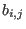 gives us the number of ways we can go from city
We know from our definition of matrix multiplication
that row 2 of  multiplied by column 4 of
multiplied by column 4 of  gives us 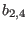
.
gives us 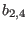
.

The third column entry in row 2 of
There are exactly three ways to fly Example Airlines from Toronto to Edmonton with three stopovers. They would be:
Suppose an anthropologist has studied a clan of bonobos and observed the pattern of dominance given in Figure 4.3. Each represents one member of the group.
We can see from this graph that the bonobo called  directly dominates the bonobos 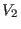
and 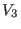
but only indirectly dominates the others.
The incidence matrix and some of its powers for this directed graph would be:
directly dominates the bonobos 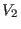
and 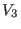
but only indirectly dominates the others.
The incidence matrix and some of its powers for this directed graph would be:

Notice that in row 1 of 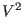
there is a one in column 4 and a two in column 6. This indicates
that there is one way that bonobo  can dominate
can dominate  through an intermediary and two ways
that
through an intermediary and two ways
that  can dominate
can dominate  through exactly one intermediary. Notice that these column positions
in the matrix
through exactly one intermediary. Notice that these column positions
in the matrix  are equal to zero. This means that
are equal to zero. This means that  does not directly dominate
does not directly dominate  or
or  .
There is no 1-chain connecting the two. Similarly we observe that the two in the matrix
.
There is no 1-chain connecting the two. Similarly we observe that the two in the matrix  shows
that there are two ways that bonobo
shows
that there are two ways that bonobo  can dominate
can dominate  with exactly two intermediaries. Notice
that the row 1, column 5 entries in
with exactly two intermediaries. Notice
that the row 1, column 5 entries in  and
are zeros. This means that the shortest path connecting
and
are zeros. This means that the shortest path connecting
 and
and  is a 2-chain.
is a 2-chain.
We can extend this logic to show that if we have an incidence matrix 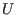
such that 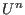
has a non-zero  entry,
and if the
entry,
and if the  entry for every 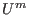
is zero for 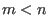
, then the shortest path from vertex
entry for every 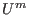
is zero for 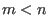
, then the shortest path from vertex  to
vertex
to
vertex  is an 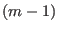
-chain. It should be apparent how useful this result can be.
is an 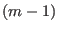
-chain. It should be apparent how useful this result can be.
One type of directed graph used frequently in economics, electrical engineering and traffic analysis is called a network. A network is a directed graph such that each pair of vertices is connected by at most one edge and each edge is assigned a number. The vertices are called junctions and the edges are called branches. The number assigned to each branch represents the flow along the branch. In most networks it is assumed that the total flow into a junction equals the total flow out of that junction. These are the type of networks we will handle since this property allows us to write the flow through a junction using linear equations. A network is represented by an augmented matrix since we need an extra column to deal with the numbers which represent the flow through each branch.
We illustrate how to assign linear equations with reference to Figure 4.4. Since the flow
going into the junction, labeled  and
and  , is equal to the flow coming out of the junction, we
can write the linear equation
, is equal to the flow coming out of the junction, we
can write the linear equation  to represent the flow through the junction.
to represent the flow through the junction.
A more complicated network is given in Figure 4.5. In this network there are four junctions and nine branches.
We can write the linear equations for each of the four junctions. The variables (and/or numbers) representing flow into the junction are put on the left of the equality sign. The variables for flow coming out are placed on the right.| 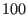 | Junction 1 | |||
| 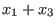 | 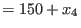 | Junction 2 | ||
| 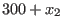 | Junction 3 | |||
| 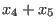 | Junction 4 |
| 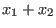 | 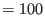 | Junction 1 | ||
| 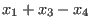 | 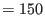 | Junction 2 | ||
| 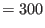 | Junction 3 | |||
| Junction 4 |

Then we use Gauss-Jordan to evaluate the matrix.
The rank of the coefficient matrix is 3 and since we have 5 variables we need 2 parameters. We'll call them
Notice that
| 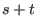 | ||
| 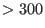 |
We can then draw a graph to indicate the region containing all pairs 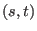 which give solutions which assure us of positive flow through the network. (Negative flow would be like having a toilet backing up, not a very desirable solution to a water flow problem.)
![\includegraphics[width=6cm,height=2.9cm]{dg2.eps}](img896.gif)
![\includegraphics[width=6cm,height=6cm]{fl2.eps}](img900.gif)
![\includegraphics[width=5.4cm,height=2.9cm]{dg0.eps}](img829.gif)
![\includegraphics[width=4.2cm,height=2.6cm]{group.eps}](img847.gif)
![\includegraphics[width=5.1cm,height=2.7cm]{fl0.eps}](img865.gif)
![\includegraphics[width=7.2cm,height=3.15cm]{fl1.eps}](img866.gif)